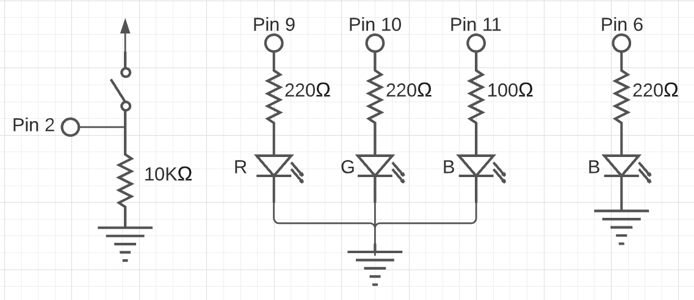

My Assignment 2!

Here is all the documentation for assignment 2. For this assignment I one green LED, an RBG LED, and a button switch. The green LED stays on until the button is pressed, and then the green turns off and the RGB turns on and fades from green to blue.
Schematic
These are the schematics for my button switch, my RGB LED, and my green LED. For my button switch I used a 10k ohms resistor to reduce the amount of power it uses as much as I can while still providing enough power for it to work. For my RGB LED I used 220 ohm resistors for the red and green legs, and a 100 ohm resistor for the blue leg. You can see my math below using Ohms law to determine the resistor amount. Following this same data I also used a 220 ohm resistor for my separate green LED.
5V - 1.8V drop for red and green
3.2V
3.2/.02 = 160 -> 220 ohm resistor
5V- 3.3 drop for blue
1.7V
1.7/.02 = 85 ohms -> 100 ohm resistor

`Circuit
Here is my breadboard and arduino.

Firmware
This is my code that tracks the state of the button and controls the LEDs.
int green = 11; //RGB green in pin 11
int blue = 10; //RGB blue in pin 10
int red = 9; //RGB red in pin 9
int input = 0;// initializes input state
const int green_solo = 6; //green LED in pin 6
const int button_pin = 2; //push button in pin 2
void setup() {
pinMode(green_solo, OUTPUT); //output to green LED
pinMode(button_pin, INPUT); //input from push button
}
void loop() {
input = digitalRead(button_pin);// read state of push button
if (input == HIGH){ // if input is high (button is pressed)
digitalWrite(green_solo, LOW); //turns off green LED
for(int i = 0; i < 256;i++){ //loops for set time
analogWrite(blue, i); //LED turns blue
delay(5); //5 second delay
}
for(int i = 0; i < 256;i++){//loops for set time
analogWrite(green, i);//LED turns green
delay(5); // 5 second delay
}}
else{
analogWrite(blue, 0); //RGB defaults to off
analogWrite(green, 0); //RGB defaults to off
analogWrite(red, 0); //RGB defaults to off
digitalWrite(green_solo, HIGH);// Green LED turns on when button is not pressed
}
}